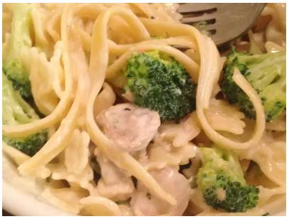

Easy Chicken and Broccoli Alfredo

Description
Fettuccine is used for this chicken and broccoli Alfredo recipe but you can use your favorite pasta.
Ingredients
- 8 ounces fettuccine, uncooked
- 2 cups fresh broccoli florets
- ¼ cup Kraft Zesty Italian Dressing
- 1 pound boneless skinless chicken breasts, cut into bite-sized pieces
- 1 ⅔ cups milk
- 4 ounces Philadelphia Cream Cheese, cubed
- ¼ cup Kraft Grated Parmesan Cheese
- ½ teaspoon dried basil leaves
Directions
- Cook pasta as directed on package, adding broccoli to the boiling water for the last 2 minutes of the pasta cooking time. Drain pasta mixture.
- Meanwhile, heat dressing in large nonstick skillet on medium-high heat. Add chicken and cook until no longer pink in the center, stirring occasionally, about 5 to 7 minutes.
- Stir in milk, cream cheese, Parmesan cheese, and basil. Bring to a boil, stirring constantly. Cook until sauce is well blended and heated through, about 1 to 2 minutes.
- Add chicken mixture to pasta mixture; mix lightly.